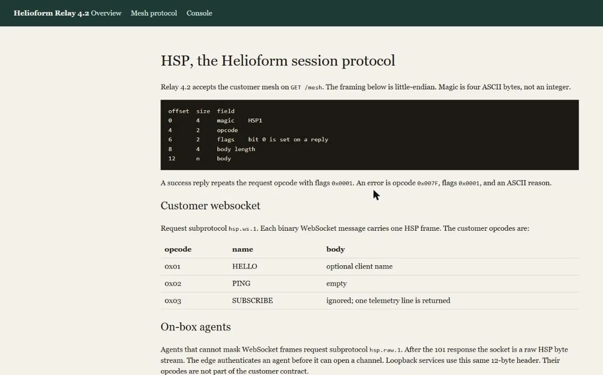
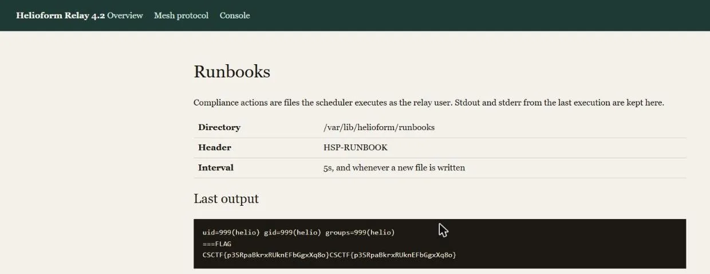

01Open agent wire (authentication bypass).
- /docs/hsp: the customer mesh is a WebSocket at /mesh with subprotocol hsp.ws.1; on-box agents use hsp.raw.1 ("A normal WebSocket client must not send hsp.raw.1. That subprotocol exists for the appliance agent"). The doc says the edge "authenticates an agent before it can open a channel" -- but nothing enforces it. Requesting the hsp.raw.1 subprotocol drops me onto the raw HSP byte stream unauthenticated.
- HSP framing: magic "HSP1", opcode (u16 LE), flags (u16 LE), body length (u32 LE), body. HELLO (0x01) returns: auth=legacy-proxy, commands=HELLO:0x01,PING:0x02,DIAL:0x10, dial=host:port, egress=127.0.0.1.

02DIAL = built-in loopback SSRF.
- DIAL (0x10) splices the connection to host:port but is locked to literal 127.0.0.1 (egress denied otherwise). A full loopback port scan through DIAL found hidden on-box services: 7710 catalogd, 7711 provd, 7712 recordd, 7713 (recordd's replication peer wire), plus 8080 (the HTTP app bound on loopback).
03Ticket + dotenv broker -> secret leak.
- catalogd (7710) issues a nonce; sending the raw nonce back (opcode 0x20) mints a ticket (tkt.<nonce>.<mac>).
- provd (7711) is a "dotenv broker": export (opcode 0x30, body "ticket=..\npath=..") reads env files. Paths are restricted to *.env under /etc/helioform/ (relative/"../" rejected). Exported /etc/helioform/relay.env -> CONSOLE_MAC_KEY=7f3c9a2e1b84d056a0c3e91f44b7d2aa CONSOLE_ISS=helioform-factory CONSOLE_AUD=relay-console REPLICATION_MAC_KEY=c1d4e8f02a6b9375d0e1f4a8b2c65d90 and /etc/helioform/collector.env -> COLLECTOR_PEER=relay-collector, LOG_ROOT=/var/log/helioform/streams.
04Forgeable break-glass console cookie.
- Per /docs/session the console cookie is hsp_session = payload_b64.mac_hex, mac_hex = HMAC-SHA256( CONSOLE_MAC_KEY, payload_b64) over a JSON {iss, aud, role, exp}; role=admin, iss/aud must match the factory environment, exp in the future. With the leaked key/iss/aud I forged an admin cookie; GET /console then shows the Mesh operator console with /console/trace (Peer trace) and /console/automation (Runbooks).
05Replication-write -> RCE (the final "unclosed path", between the agent wire and the compliance ledger).
- /console/automation: the scheduler executes files in /var/lib/helioform/runbooks every 5s as the relay user, and mirrors their stdout to the page. /console/trace documents the recordd replication wire (hsp-repl/1): peer hello (opcode 0x11) then commit blob (opcode 0x17); "mode 0x01 replaces the resolved stream file with body". MACs use REPLICATION_MAC_KEY (leaked) with the documented canonical strings; recordd status (0x40, with a ticket) gives the current epoch/tip/bind to chain a commit.
- The stream_id is joined onto a root like os.path.join(root, stream_id). A relative/"../" id is rejected and a plain id fails ("open failed"), but an ABSOLUTE stream_id overrides the join and escapes entirely: stream_id = "/var/lib/helioform/runbooks/pwn" -> ok path=/var/lib/helioform/runbooks/pwn.
- Peer=relay-collector; signed peer hello + commit blob (mode 1, current epoch/tip/bind) writes a runbook. The scheduler executes it (the runbook body is Python after the "HSP-RUNBOOK" header line), running as helio; its stdout on /console/automation reads /tmp/flag (/flag -> /tmp/flag): uid=999(helio) ... ===FLAG CSCTF{3vT2AVuphrSCp62fiWdAFdB2}
- Result: a live reproduction against a freshly fetched instance (w02.ctf.chronos-security.ro:33799) leaked the console and replication MAC keys, read recordd epoch=7 on repl_port=7713, sent the signed repl hello (ok) and a mode-1 commit (ok path=/var/lib/helioform/runbooks/pwn), and after the scheduler ran the runbook the forged-admin /console/automation showed uid=999(helio) and the staged incident tasking CSCTF{xVDh8BbcQtGleeGgrtJLoYh1}. The replication cluster key is the raw dotenv string (ASCII), matching how the console cookie MAC key is used; the per-instance flag differs from the documented one above.
